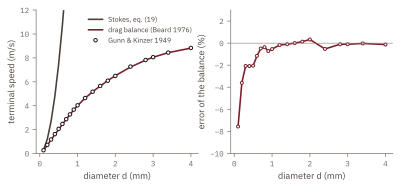
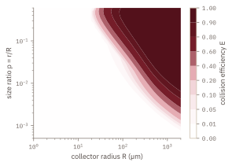
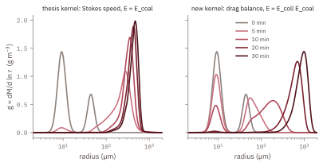
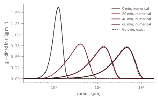

Bachelorarbeit, Leipzig 2022 · neu modelliert
Wolkenphysik · stochastische Koaleszenz · numerische MethodenDroplet Collection
Wie aus Wolkentröpfchen Regen wird
Ein großer Tropfen fällt schneller als ein kleiner und sammelt ihn ein; so kann eine Wolke aus winzigen Tröpfchen binnen Minuten zu Regen werden. Numa Koudsies Bachelorarbeit, Collisional Ice Multiplication Processes in Clouds (Leipzig, 2022), modellierte dieses Einsammeln und die Eissplitter, die dabei entstehen können, mit dem Stokesschen Gesetz für die Fallgeschwindigkeit und dem geometrischen Querschnitt für die Trefferwahrscheinlichkeit. Die Neumodellierung ersetzt jeden Baustein durch Physik, die bei den entscheidenden Größen gilt: ein Kräftegleichgewicht mit Luftwiderstand für die Fallgeschwindigkeit, Kollisionseffizienzen aus der Bahn des kleinen Tröpfchens in der Luftströmung um den großen Tropfen und die vollständige stochastische Koaleszenzgleichung für die Buchführung. Jeder Schritt wird auf der Theorieseite hergeleitet und auf der Prüfseite getestet, und der Löser läuft in Ihrem Browser.
- 6 / 14min
- bis 50 / 90 % der Masse über 40 µm, erweiterter Kern
- 3 / 5min
- dasselbe, Kern der Abschlussarbeit
- 2.1 %
- größter Fehler der Fallgeschwindigkeit gegenüber Messungen, ab 0.3 mm
- 10−7
- Massenfehler gegenüber Golovins exakter Lösung
1.1Die warme Wolke
Der Testfall ist eine warme Wolke aus \(300\ \mathrm{cm^{-3}}\) Tröpfchen mit dem Radius \(8\ \mathrm{\mu m}\) und \(1\ \mathrm{cm^{-3}}\) Sammlern von \(40\ \mathrm{\mu m}\), bei \(10\,{}^{\circ}\mathrm{C}\) und \(850\ \mathrm{hPa}\). Das Wachstum wird am Massenanteil in Tropfen mit dem Radius \(r \ge 40\ \mathrm{\mu m}\) gemessen: ein Maß für das Wachstum, keine Niederschlagsvorhersage. Mit dem Kern der Abschlussarbeit staut sich die Masse bei etwa \(500\ \mathrm{\mu m}\) und bleibt stehen, weil die mit Stokes-Geschwindigkeiten berechnete Weber-Zahl die Koaleszenz abschaltet; mit dem erweiterten Kern wachsen die Tropfen weiter bis zu Millimetern. Der Kern zählt mehr als die Buchführung.
1.2Was sich geändert hat, je eine Zeile
- Fallgeschwindigkeit. Für einen Tropfen von \(200\ \mathrm{\mu m}\) liefert das Stokessche Gesetz \(\mathrm{Re}\approx 150\), außerhalb seines eigenen Gültigkeitsbereichs. Ein Kräftegleichgewicht mit Beards Widerstandsbeiwert \(C_D(\mathrm{Re})\), gelöst über die Davies-Zahl, gibt die Messungen von Gunn und Kinzer ab 0.3 mm auf 2.1 % genau wieder.
- Kollisionseffizienz. Das kleine Tröpfchen gehorcht in der Strömung um den Sammler der Gleichung \(\tau\,\dot{\mathbf v} = \mathbf u - \mathbf v - \tau g^{*}\mathbf e_z\); mit \(R\) und \(U\) skaliert, ist das die Stokes-Zahl \(\mathrm{St} = \tau U/R\). Die streifende Bahn ergibt \(E\); der Löser reproduziert die kritischen Stokes-Zahlen \(1/12\) und \(1.21\).
- Buchführung. Aus den zwei festen Populationen der Abschlussarbeit wird ein einziges Spektrum, das der Smoluchowski-Koaleszenzgleichung gehorcht; die Gleichungen der Abschlussarbeit ergeben sich daraus als Grenzfall seltener Sammler.
- Numerik. Ein logarithmisches Massengitter, an Ort und Stelle berechnete Paarflüsse, eine Verteilung, die Anzahl und Masse erhält, und ein Begrenzer, der hergeleitet statt geraten ist; getestet an Golovins exakter Lösung, mit einem Massenfehler von \(10^{-7}\) und einem Spektrumsfehler von 5 % bei 8 Klassen pro Massenverdopplung.
- Eis. Splitterfragmente treten der wechselwirkenden Population bei. Die Fragmentierung der App ist ereignisbasiert: ein fester Massenanteil \(\lambda\) pro Eis-Eis-Kollision und eine feste Fragmentmasse. Der Code der Abschlussarbeit entzieht stattdessen Masse mit einer zufälligen Rate pro Sekunde, also prüfen die kalten Läufe den Ansatz der App, nicht das Modell der Abschlussarbeit. Mit den Fragmenten im Rennen wächst die Eisanzahl in einer Stunde von 167 auf 1 700–2 100 cm⁻³, und die Masse über 40 µm fällt auf 0.2–4 %: Dieses Ergebnis treibt der Ansatz, nicht der Löser.
1.3Vier Abbildungen aus dem Projekt




1.4Die Seiten des Projekts
- ÜberblickDie Frage, die warme Wolke in zwei Bildern und die fallenden Tröpfchen.
- TheorieZwölf Kapitel von der Begegnung bis zur Übersicht der Belege, 62 nummerierte Gleichungen, durchgerechnete Beispiele und jede Korrektur an der Stelle, an der sie auftritt.
- ErgebnisseWarme und kalte Wolken, vier Modelle desselben Spektrums.
- SimulierenDer Löser der Koaleszenzgleichung, in Ihrem Browser.
- PrüfungenFallgeschwindigkeit, Kollisionseffizienz, kritische Stokes-Zahlen und der Golovin-Test.
Eine statische Kopie der App Droplet Collection; die App selbst ist auf Englisch. Ihre Liste gespeicherter Läufe fehlt: Jeder Lauf wird frisch in Ihrem Browser berechnet, und nichts wird gespeichert.